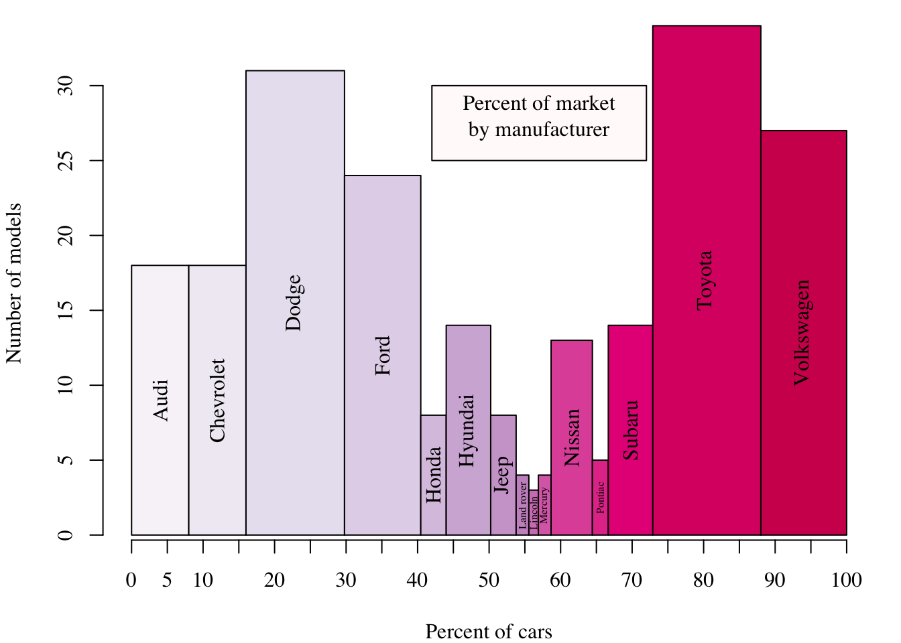
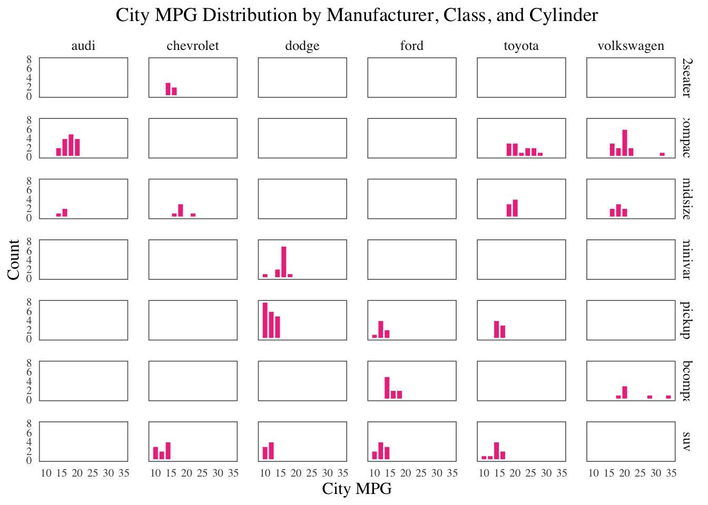
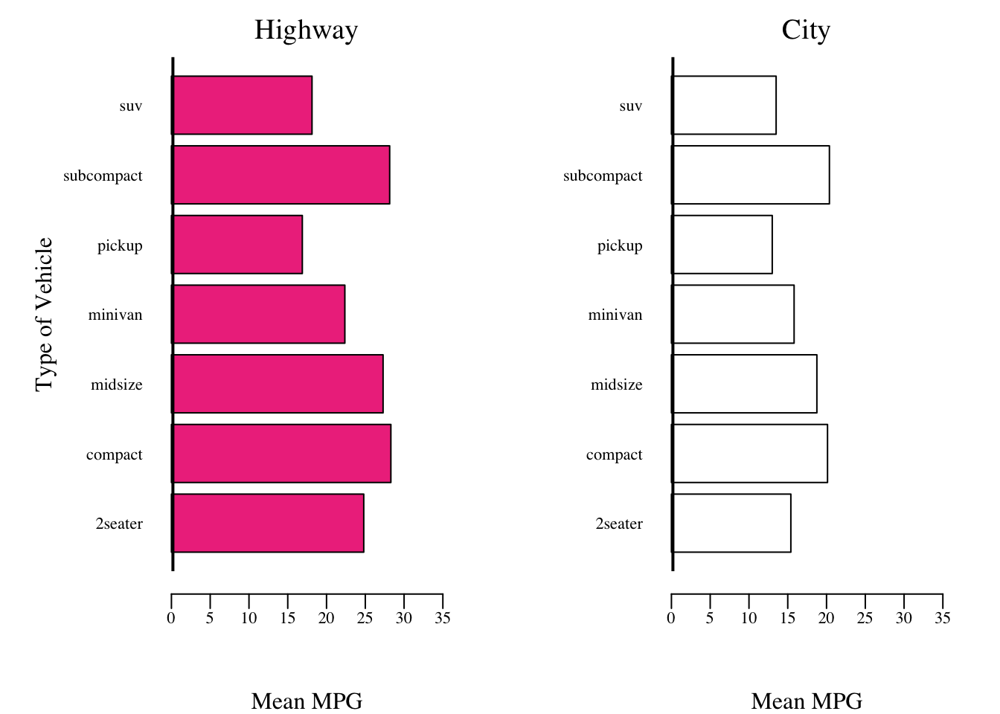
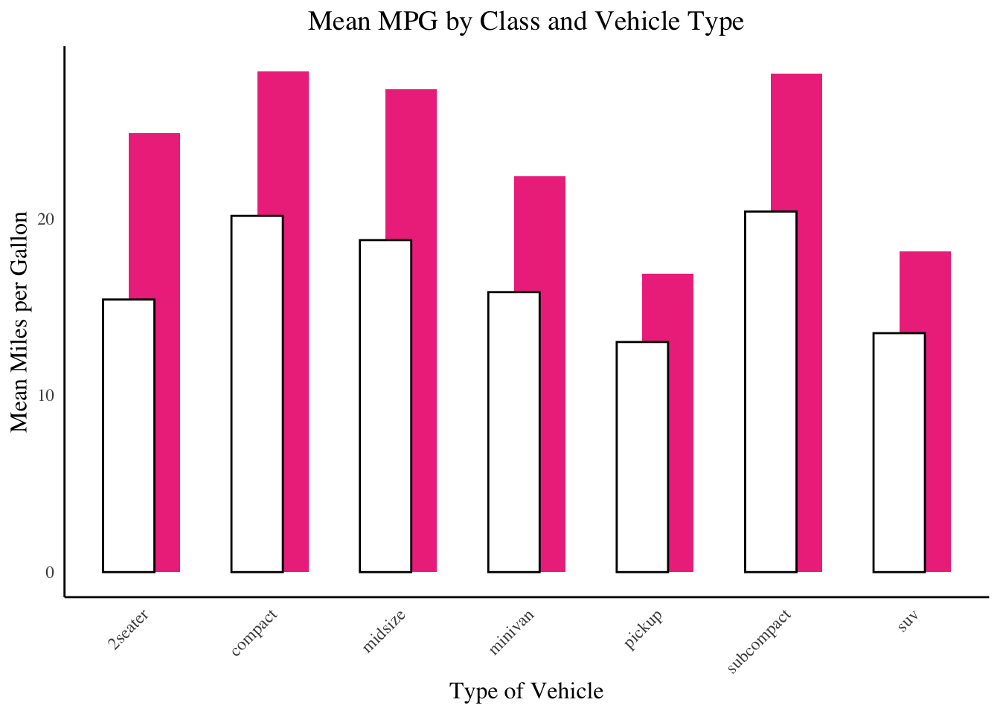

# Team GeoVIS
# Members : Changho Lee, Americo Gamarra, Brennan Stout, Umme Kulsum - Coordinator
library(tidyverse)── Attaching packages ─────────────────────────────────────── tidyverse 1.3.2 ──
✔ ggplot2 3.4.0 ✔ purrr 0.3.5
✔ tibble 3.1.8 ✔ dplyr 1.0.10
✔ tidyr 1.2.1 ✔ stringr 1.4.1
✔ readr 2.1.3 ✔ forcats 0.5.2
── Conflicts ────────────────────────────────────────── tidyverse_conflicts() ──
✖ dplyr::filter() masks stats::filter()
✖ dplyr::lag() masks stats::lag()library(ggplot2)
data <- mpg
font <- "serif"
data$model<-paste0(toupper(substr(data$model, 1, 1)), substr(data$model, 2, nchar(data$model)))
data$manufacturer<-paste0(toupper(substr(data$manufacturer, 1, 1)), substr(data$manufacturer, 2, nchar(data$manufacturer)))
## 1st Graph
library(dplyr)
library(RColorBrewer)
uniq <- count(unique(data,vars = c(manufacturer, cty)),vars=manufacturer)
qual_colors <- colorRampPalette(brewer.pal(9, "PuRd"))(20)
newdata <- data[ which(data$manufacturer=='ford'), ]
total <- sum(uniq$n)
widths <- c()
for (m in 1:length(uniq$vars)){
widths <- append(widths, (uniq$n[m]/total)*100)
}
heights = uniq$n
par( mar= c(4,4,1,1),family=font )
p <- barplot(heights, widths, space=0,
col = qual_colors, xlab = "Percent of cars", ylab = "Number of models")
text(x = p, y = heights/2, labels = uniq$vars, cex=ifelse(uniq$vars%in%c("Land rover","Lincoln","Mercury","Pontiac"),0.5,1), srt=90)
axis(1, seq(0,100,5))
polygon(c(42,42,72,72), c(25, 30, 30, 25), col="snow")
text(57, 28, "Percent of market\nby manufacturer", cex=1)
## 2nd Graph
# Get the 6 largest manufacturers by count
top_makers <- mpg %>%
count(manufacturer) %>%
top_n(6, n) %>%
pull(manufacturer)
# Filter the data to include only the top 6 manufacturers
mpg_filtered <- mpg %>%
filter(manufacturer %in% top_makers)
# Create the faceted histograms for city mpg
ggplot(mpg_filtered, aes(x = cty)) +
geom_histogram(binwidth = 2, fill = "violetred2", color = "white") +
facet_grid(class ~ manufacturer) + # Facet by class and cylinders
labs(x = "City MPG", y = "Count", title = "City MPG Distribution by Manufacturer, Class, and Cylinder", family=font) +
theme_minimal() +
theme(
strip.text = element_text(size = 10,family=font), # Adjust facet label size
panel.spacing = unit(1, "lines"), # Add spacing between facets
axis.text.x = element_text(size = 8,family=font), # Adjust size of x-axis text
axis.text.y = element_text(size = 8, family=font), # Adjust size of y-axis text
axis.title.x = element_text(size = 12, family = font), # Set x-axis label font and size
axis.title.y = element_text(size = 12, , family = font), # Set y-axis label font and size
plot.title = element_text(size = 14, family = font, hjust = 0.5),
panel.grid = element_blank(),
panel.border = element_rect(color = "gray40", fill = NA, size = 0.6)
)Warning: The `size` argument of `element_rect()` is deprecated as of ggplot2 3.4.0.
ℹ Please use the `linewidth` argument instead.
## 3rd Graph
mh <- aggregate(hwy ~ class, data = data, mean)
mc <- aggregate(cty ~ class, data = data, mean)
par(mfrow = c(1, 2), mar = c(5,6,2,2), mgp = c(4, 1, 0.8), family = font, cex.main = 1.2,
cex.lab = 1, font.main = 1,
font.lab = 1, font.axis = 1, cex.axis = 0.7)
# mean highway MPG
barplot(mh$hwy, names.arg = mh$class,
horiz = TRUE, col = "violetred2", border = "black",
xlab = "Mean MPG", ylab = "Type of Vehicle",
xlim = c(0, 35),
main = "Highway", las = 1)
abline(v = 0, lwd = 4, col = "black")
# mean city MPG
barplot(mc$cty, names.arg = mc$class,
horiz = TRUE, col = "white", border = "black",
xlab = "Mean MPG", ylab = "",
xlim = c(0, 35),
main = "City", las = 1)
abline(v = 0, lwd = 4, col = "black") 
## 4th Graph
data_sum <- mpg %>%
group_by(class) %>%
summarise(mh = mean(hwy), mc = mean(cty))
ggplot(data_sum, aes(x = class)) +
geom_col(aes(y = mh), fill = "violetred2", width = 0.4,
position = position_nudge(x = 0.1)) +
geom_col(aes(y = mc), fill = 'white', color = "black",
width = 0.4, position = position_nudge(x = -0.1)) +
labs(x = "Type of Vehicle", y = "Mean Miles per Gallon", title = "Mean MPG by Class and Vehicle Type") +
theme_minimal() +
theme(panel.grid = element_blank(),axis.line = element_line(color = "black"),
axis.text.x = element_text(angle = 45, hjust = 1, family = font),
axis.text.y = element_text(family = font),
axis.title.x = element_text(family = font, size = 12),
axis.title.y = element_text(family = font, size = 12),
plot.title = element_text(family = font,
size = 14, hjust = 0.5))